Two cameras, one picture. CFFM-Net fuses a visible and a thermal camera with a selective
state-space scan, and decides, at every location, which camera to trust. Every subject is bracketed,
numbered and logged.
Drop a visible and a thermal image of the same scene, or click a sample. Ordinary photos go to the general YOLO26-n (80 COCO classes), drawn the same way.
ready
backend
The page calls a Gradio app (demo/app.py). Run it locally or point this at a Hugging Face Space.
02 Tracking a crowd
MOT17-04, a pedestrian street at night filmed at 30 fps, with ByteTrack. Each subject keeps its number, a trail of where it walked and an arrow for where it is heading. Visible footage, so the general YOLO26-n runs here.
03 What we found
The same night scene with each camera failing, from the round-one pilot. Both fusion models kept
working on thermal alone, and both went blind when the thermal camera was lost. Every later round trains
with modality dropout for that reason.
Two cameras beat one
On M3FD, fusion beats the best single camera by
+4.0 mAP. A plain concatenation baseline already captures +3.4 of that.
The gated scan adds a small margin
Over three seeds CFFM-Net leads the matched
baseline by +0.6 ± 0.4 mAP on M3FD (p = 0.11) and +0.8 ± 1.1 on LLVIP (p = 0.37). Neither is
significant, and the paper says so.
Ahead when the thermal camera fails
Across eleven injected faults on M3FD, the model
leads by +3.6 points on thermal-side faults and trails by 0.9 on visible-side ones.
Fault training beats architecture
A concatenation baseline trained with fault
augmentation is more robust than the model: 5.1 points ahead on M3FD and 11.9 on LLVIP,
averaged over the eleven faults. Training the scan the same way is the next experiment.
04 Results
COCO mAP50-95 on the full test sets, YOLO26-n backbones. Fusion rows are means over three seeds at
80 epochs. Single-camera rows are one seed, 80 epochs on M3FD and 30 on LLVIP. Latency is the median on an idle
RTX 4050 laptop GPU.
model
LLVIP
M3FD
params
latency
visible camera only
52.0
49.9
2.50 M
–
thermal camera only
64.1
47.6
2.50 M
25.8 ms
two-stream concat, modality dropout
65.5
53.3
4.07 M
33.1 ms
CFFM-Net v2
66.2
53.9
6.02 M
45.0 ms
05 Where it comes from
The two families CFFM-Net is built from, redrawn from the original papers in one visual language.
Blue is the visible camera, orange the thermal camera, purple the selective scan, gold the detection heads.
YOLO, from one grid to YOLO26
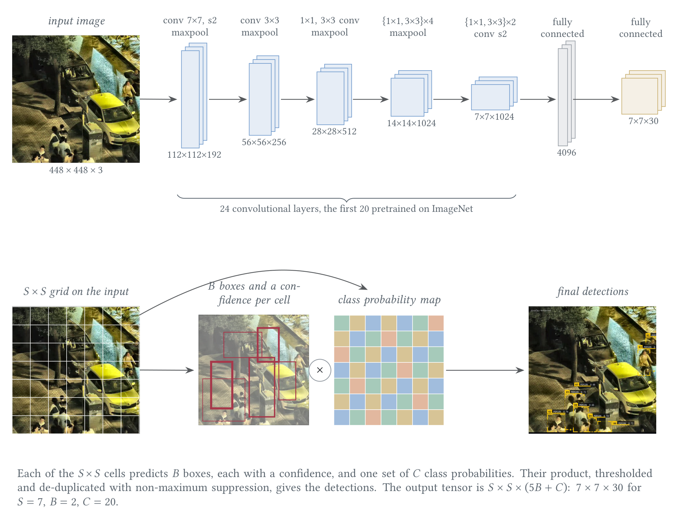
YOLOv1, after Redmon et al. (2016): one network, one pass, an S×S grid that predicts boxes and classes.
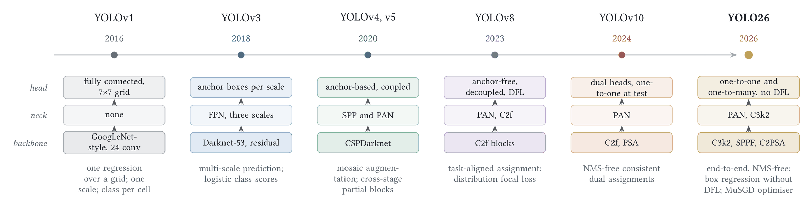
Ten years of YOLO: backbone, neck and head, and the one change that defines each generation, ending at the NMS-free, DFL-free YOLO26.
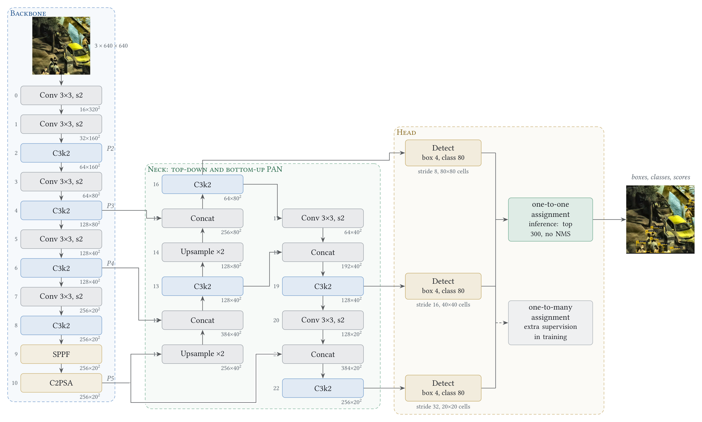
YOLO26-n as used here, with every layer index and measured shape at 640 px. Training uses two heads: one-to-many and one-to-one. Inference uses only the one-to-one head, so there is no NMS.
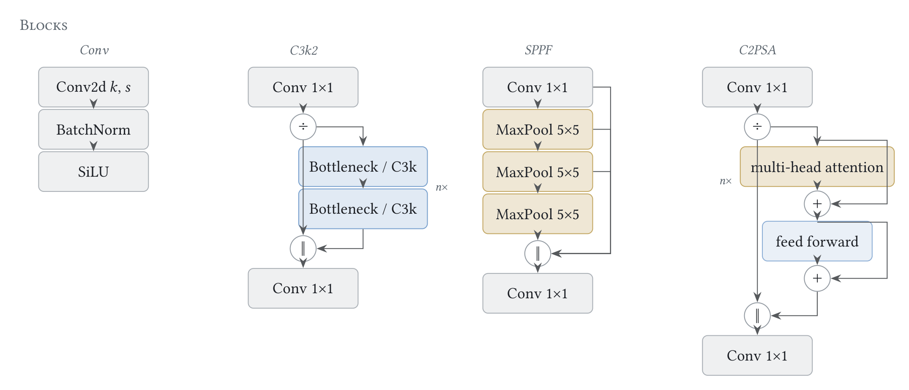
The four repeated blocks: Conv, C3k2, SPPF and C2PSA.
State-space models and Mamba
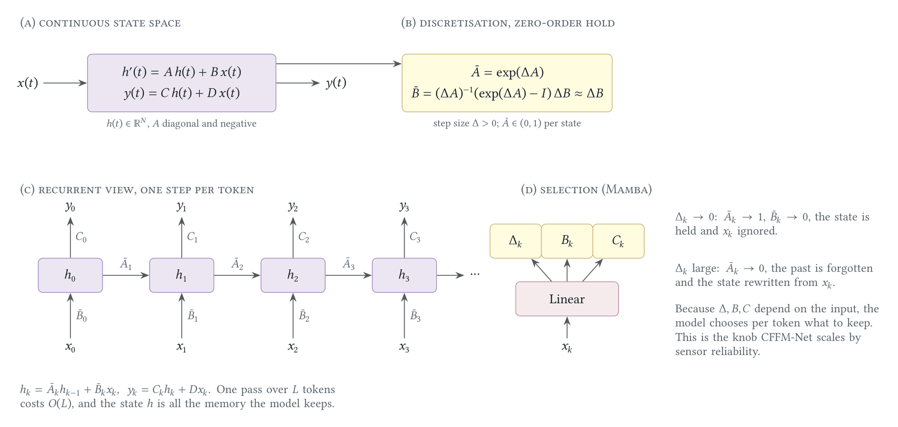
From a continuous state-space model to a selective scan, after S4 and Mamba. Making the step Δ depend on the input lets the model choose what to keep.
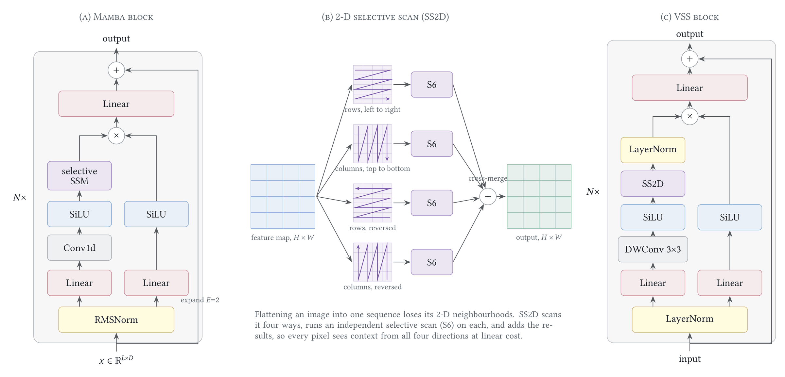
The Mamba block, VMamba's four-way cross-scan (SS2D) and the VSS block that wraps it.
06 How it works
CFFM-Net as trained, drawn with the real activations of one LLVIP test pair. The two backbones never mix;
they meet only in the fusion blocks, where each token's scan step is scaled by how reliable its camera is there.
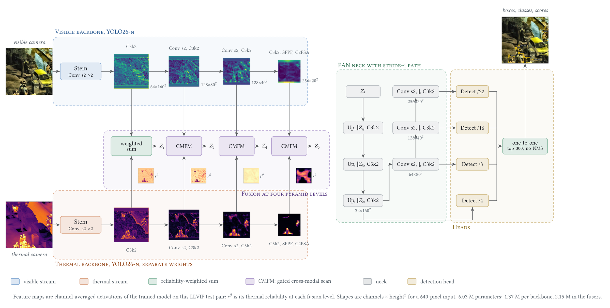
Two YOLO26-n backbones, a reliability-weighted sum at P2, the cross-modal fusion Mamba block at P3 to P5, the YOLO26 neck and heads. The small maps are the thermal reliability at each level. This is the round-one model; the final v2 drops the stride-4 level and runs at 6.02 M parameters and 16.5 GFLOPs.
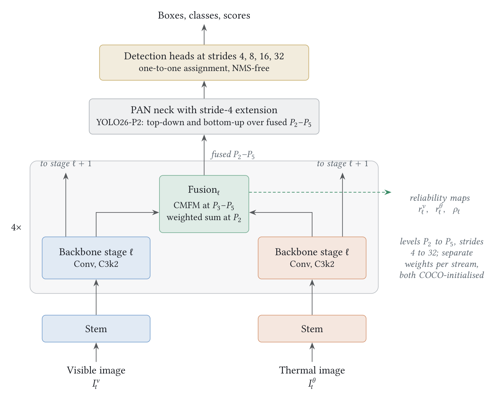
The same network in compact form: one stage per stream, fused at each level.
Reliability scales each token's step. A camera with zero reliability cannot write into the state.
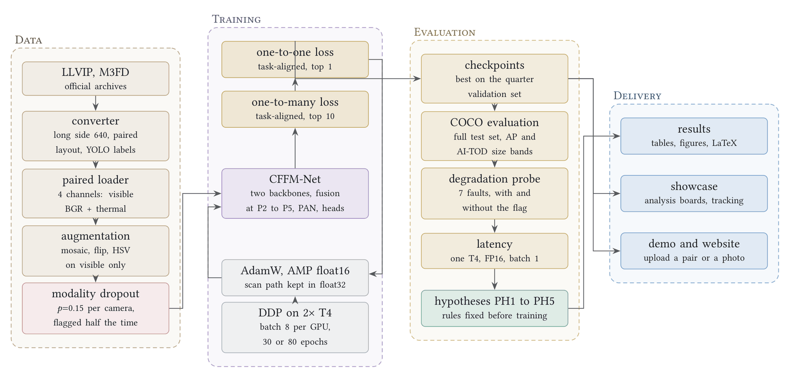
From raw archives to verdicts: paired conversion, shared augmentation, modality dropout, two YOLO26 losses, FP32 scan under AMP, then COCO AP, the sensor-fault probe, latency and the pre-registered decisions.
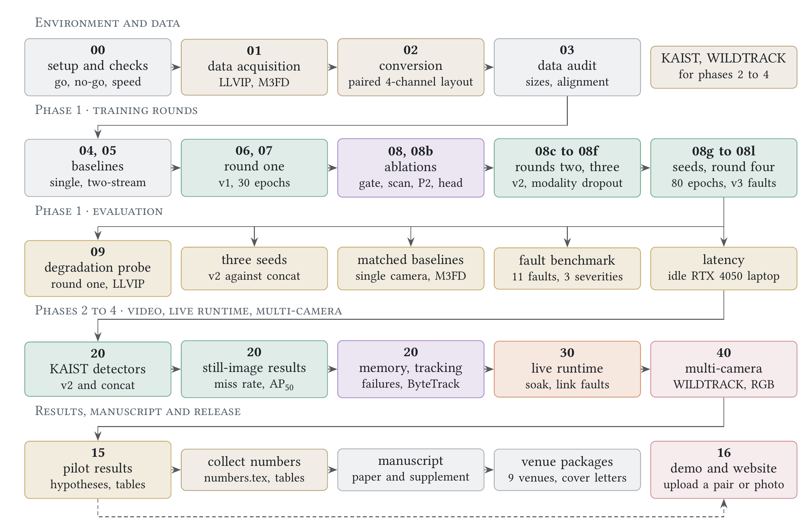
The research workflow end to end: data, training rounds, the evaluations of each phase, the numbers file that feeds every table, the manuscript and its venue packages.
07 Four phases, built and measured
Still images are Phase 1. Phase 2 adds memory across frames and tracking. Phase 3 runs on live
cameras, and Phase 4 combines several cameras into anonymous counts. All four are built, and every number below
comes from the result files in the repository.
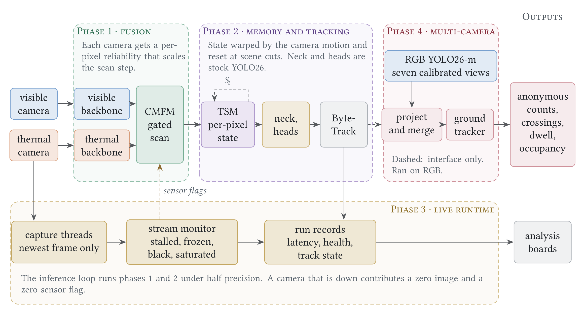
The whole system in one picture: two cameras, the fusion detector, temporal memory and tracking, the live runtime with its stream monitor, and the multi-camera ground-plane layer.
Phase 1 · fusion detector
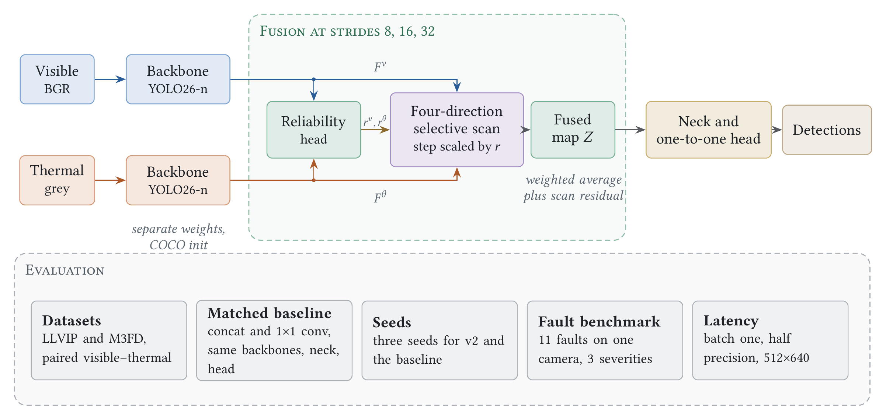
Two YOLO26-n backbones meet in fusion blocks, where the reliability of each camera scales the step of a four-direction selective scan. Evaluated over three seeds against a matched baseline, on eleven sensor faults and for latency: 66.2 mAP on LLVIP and 53.9 on M3FD.
Phase 2 · video memory and tracking
A per-pixel state carried from frame to frame. On KAIST it cuts the miss rate under thermal noise from 51.6 to 34.1 percent, with a confound the paper states. It barely helps when the thermal camera is lost (−0.3) and does not improve tracking (MOTA 44.5 without it, 42.5 with).
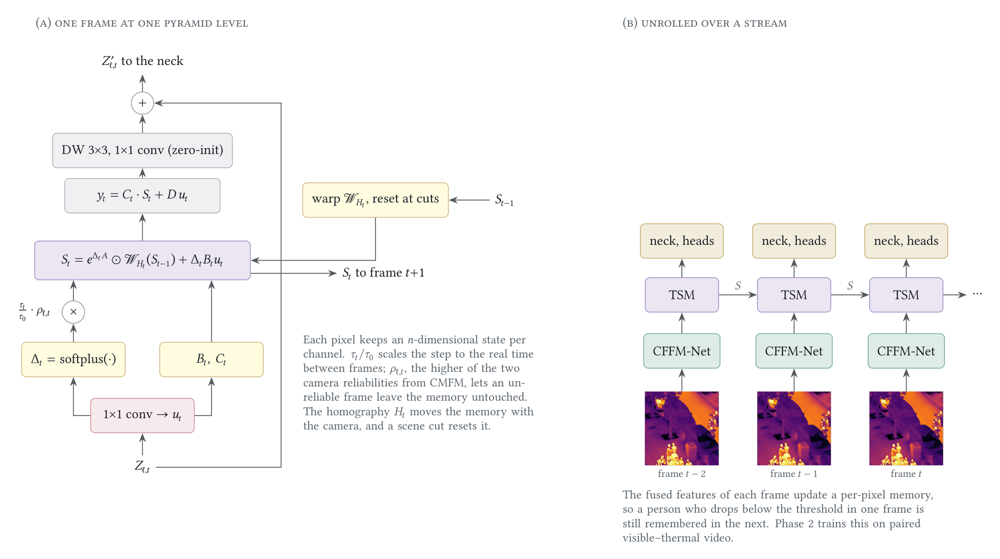
Inside the Temporal State Memory: the step is scaled by the real time gap and by reliability, and the state is warped with the camera and reset at scene cuts.
Phase 3 · live runtime
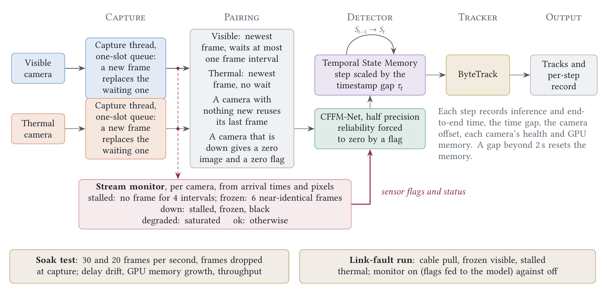
The live path from two cameras to the screen, with a monitor that flags a stalled or lost camera. Delay and GPU memory stay bounded over a ten-minute run at 12.4 frames per second on a nominal 30, and a cable pull is flagged in 0.29 s.
Phase 4 · multi-camera analytics
Detections from the WILDTRACK cameras projected to a shared ground plane, associated and tracked, then reduced to anonymous counts, crossings and dwell times. This layer is RGB-only: 77.4 percent MODA, 79.4 MOTA, 84.9 IDF1 and a count error of 6.0 percent.
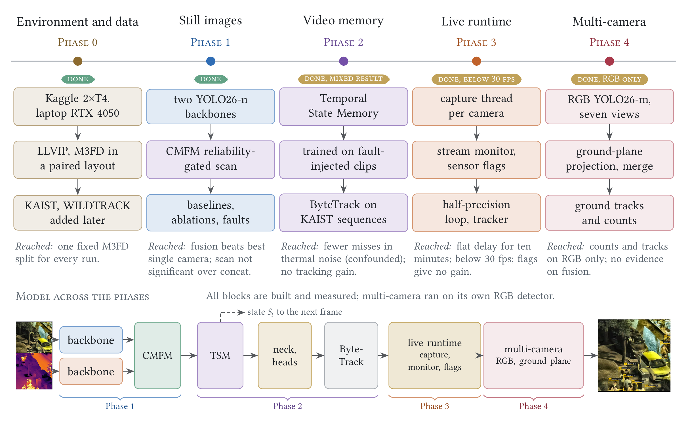
Every phase with what it delivers and what it reached, and how the model grows from one phase to the next.
Every diagram, with the reasoning behind it, is collected in the Architecture Atlas (PDF). The code, tests and notebooks are on GitHub.
08 The paper
CFFM-Net: Reliability-Gated Mamba Fusion of Visible and Thermal Images for Detection, Tracking and
Multi-Camera Analytics, by Ritesh Roshan. A controlled study that reports each result as it came out,
including the ones that went against the model.